Public data only: 200 long-form uploads, their titles, thumbnails, runtimes, lifetime views, likes, comments and the first minute of speech. No click-through, no retention, no viewer split.
Stokes Twins, from the outside
A 145-million-subscriber challenge channel read without any access to its analytics. What the catalogue shows on its own: the channel has changed shape three times, its working length is 25 to 30 minutes and every marathon past it has paid, its strongest recent thrillers borrow a bigger name, and its openings say the title in the first sentence without exception. A typical upload has gathered 55.6M views; the median gap between uploads is 9 days.
Updated 2026-09-02
55.6M
Median lifetime views per upload
200 uploads, June 2020 to August 2026. 2024 uploads sit at 146.4M; 2026 uploads are still accruing.
1.07x
25 to 30 minutes, since 2024
21 uploads. Over 40 minutes runs 0.68x; the 5 past 55 minutes sit with the weakest recent uploads.
1.79x
MrBeast Was Murdered..
Best upload of the last three years, 205.6M views. The thrillers about the twins themselves read 0.67x and lower.
78%
Openings that say the title inside ten words
197 transcripts stored. No variance to measure the opening claims against; they need the curve.
The catalogue
The channel changed shape three times
Two hundred long-form uploads, from 2020-06 to 2026-08. In 2026 the twins shipped 16 videos at a median 28 minutes, one every 13 days, and a typical upload has since gathered 28.2M views. By 2026 the count was 16, the median runtime 28 minutes, the gap 13 days and the typical upload 28.2M views. The 2024 cohort sits highest at 146.4M. Three moves are visible in the table below: the pranks-and-crush era of 2020 and 2021, the pivot to spectacle formats in 2022 and 2023 when runtimes doubled and views quadrupled, and the staged-thriller era from 2024 on.
Read the 2025 and 2026 bars with care. These are lifetime counts, so a 2026 upload is measured a few months into its life against 2024 uploads measured two years in. The store now snapshots views on every ingest, and the first-28-day figures that arrive from the next uploads will say how much of that gap is age. Nothing here is a verdict on decline.
Public reporting puts the channel's 2024 surge on multi-language dubbing and a heavy Shorts push, with daily views rising from a few million to about fifty million. Neither is visible in this record: Shorts are excluded by design, and dubbed audio tracks count inside the same video's views. What the record does show is that the long-form uploads of that year are the largest the channel has made.
Uploads per yearObserved
2026 runs to 29 August.
Median runtime per yearObserved
Runtime tripled between 2020 and 2024 and has held at about 27 minutes since.
Median lifetime views per upload, by yearObserved
Lifetime counts. The 2025 and 2026 cohorts are still accruing; the gap to 2024 is partly age.
Formats
Thirteen shapes, and the ones that carry the channel
The classifier found thirteen repeatable shapes in the 200 titles and left 98 uploads (49%) as one-offs, which is itself a description of the channel: about half of what they make is a fresh premise. The shapes are ordered by their median score, where 1.0x means typical for the uploads around it in time.
The shape that built the channel is retired. ___ ___ In 24 Hours ran 19 times from 2020 to 2023 at 1.33x and has not been used since; ___ For 24 Hours (1.07x over 11) stopped in 2022. The current carriers are ___ Was Murdered.. (1.14x over 6, the staged thrillers), I Built ___ Secret Rooms ___ (1.05x over 10) and I Tested ___ Banned ___ (1.05x over 7). At the bottom sit Last To Leave ___ Wins $___ (0.88x over 10, still being made), I Exposed ___ ___ (0.82x) and the 2020 prank shape (0.66x).
None of the thirteen is era-bound: every shape was interleaved with others in its months, so the score compares a shape against different shapes rather than against itself.
Every repeatable shape, median scoreObserved
Score = lifetime views against the median of the nearest uploads in time. 98 one-offs are not in any shape.
Borrowed names
The thriller shape lands hardest when the victim is someone bigger
Eight uploads since 2023 stage a murder, a disappearance or a kidnapping. The two biggest carry a borrowed name: MrBeast Was Murdered.. is the best video of the last three years at 1.79x and 205.6M views, and KPop Demon Hunters Were Murdered.. rode a film franchise to 1.23x. The entries about the twins themselves went 1.15x and 1.13x in 2023, then 0.67x in 2025; the 78-minute 3 YouTubers Were Murdered.. is the weakest at 0.50x.
The same instinct runs through the metadata. 170 of the 200 uploads tag other creators (Ben Azelart on 133, Brent Rivera on 97, MrBeast on 75), which is a discovery strategy written into every upload rather than an occasional collaboration. The knowledge base files borrowed reach as a reach multiplier and as a warning in the same breath: a single winner may belong to the guest rather than the format, and a viral audience that came for MrBeast is not proof it will stay for the twins.
What the record cannot separate is name from runtime: the weakest thriller is also the longest (79 minutes at 0.50x), and the runtime section below shows that length alone explains a lot on this channel. The two strongest run 27 and 26 minutes.
The staged thrillers, in order of uploadObserved
Highlighted bars carry a borrowed name (MrBeast, KPop Demon Hunters).
Runtime
Twenty-five to thirty minutes is the working length; the marathons pay for it
Across all 200 uploads runtime and score are unrelated (rank correlation +0.08), which is the fleet's finding too: the claim that longer videos do not reduce views held on this channel as it has on 181 of 198 readings. Inside the last three years the picture sharpens. The 21 uploads between 25 and 30 minutes run 1.07x; the 7 over 40 minutes run 0.68x, and the 5 past 55 minutes (132 min at 0.45x, 79 min at 0.37x, 79 min at 0.50x, 64 min at 0.86x, 59 min at 0.72x) sit with the weakest recent uploads on the channel. The correlation within the window is -0.25, and it is those 5 that carry it.
The secret-rooms shape shows the same thing inside one format. Ordered by runtime, the 26-to-29-minute entries score 1.68x, 1.77x and 1.51x; the 32-to-37-minute entries 0.86x, 1.02x and 1.08x; the 78-minute entry 0.37x and the 131-minute entry 0.45x. Repeating the shape is not what wears it: the fleet's format-decay claim did not hold here (repeat depth moved with views, +0.16), and the near-duplicate claim read +0.13. Stretching it is.
No retention curve exists in this record, so whether the long entries lose their audience early or hold a smaller crowd for longer is not knowable here. The fleet measures runtime against the halfway hold on 19 curve-bearing channels (held on 59 of 76 readings); this channel cannot join that measurement until analytics access exists.
Median score by runtime band, uploads since 2024ObservedRuntime against score, every upload since 2024Correlation
Highlighted: the 5 uploads past 55 minutes. Remove them and the relationship is flat.
The secret-rooms shape, ordered by runtimeObserved
Same shape, same years. The three strongest are the three shortest full-size entries.
Titles
The words that separate, and the levers that do not
A recent title here is 7 words, and length does not separate winners from the rest (rank correlation +0.10). The one voice that does is the first-person verb: uploads opening with I tested, I built, I survived, I became run 1.03x against 0.84x for everything else since 2024, and the channel moved to it deliberately: 52% of 2020 titles were all-caps shouts and 2% first-person; by 2024 the caps were gone (0%) and 81% opened in the first person. The knowledge base holds a theory that casing selects a younger audience; this channel dropped the caps while its views quadrupled, though the runtime, the thumbnails and the formats changed in the same months, which is exactly the five-variable postmortem the warning describes.
The levers the fleet has already rejected do not work here either. A number sits in 104 of 200 titles and separates nothing (1.01x with a number, 0.93x without; the fleet rejected numbered titles as a lever on 84 channels). World-superlatives (world's strictest, most evil) read 0.97x against 0.94x; the fleet's superlative claim is contested and did not hold on this channel. Shorter titles earn a higher click-through on 19 measured channels, but no click-through exists in this record, so that claim cannot be tested here.
School, kids and myths are the subject words that sit above the line in the recent window, and horror words sit below it; with fewer than ten uploads behind most of these rows they are a direction to test, not a finding.
Median score of uploads whose title carries the word, since 2024Observed
Highlighted rows differ from their complement by 0.08x or more. Small groups; a direction, not a finding.
Share of titles in all-caps, by yearObservedShare of titles opening in the first person (I, We, My, Our), by yearObserved
Thumbnails
From group shots to movie posters
The eight strongest uploads of 2020 and 2021 share one picture: four to six friends in primary-colour clothes, a prop in the middle of the frame, a shocked face or a kiss, and a word or emoji laid over the top. The strongest uploads since 2024 are single staged scenes: the twins in matching outfits, one large legible object (a Lamborghini under lava, a dumpster of Dalmatian puppies, a hospital gurney, a backrooms monster), no more than one word of text, and a colour palette built around a red or a blue. Both languages worked in their era; neither is measured here, because no impression or click-through figure exists in public data. What follows is what is visible, not what clicked.
The 2020 and 2021 winners
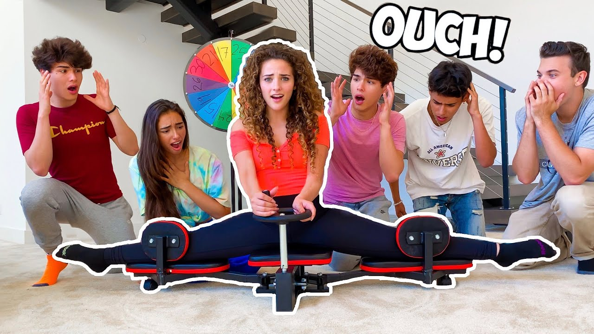
2020, 7.48x, 38.8M, 13 min2021, 4.30x, 38.2M, 12 min
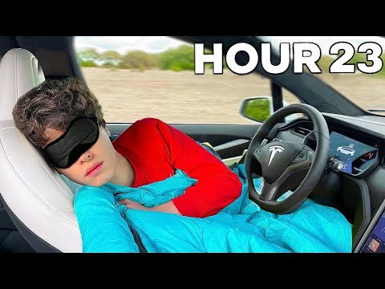
2021, 4.25x, 38.3M, 11 min
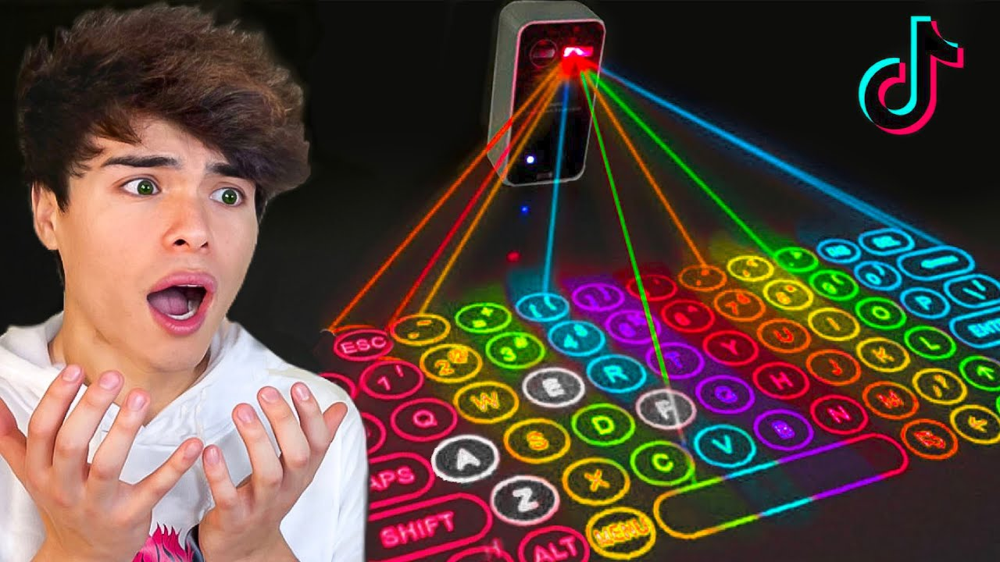
2021, 4.18x, 28.6M, 11 min
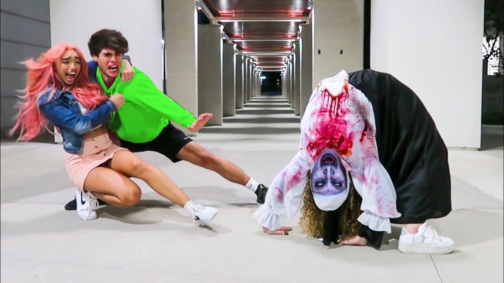
2020, 2.87x, 31.3M, 8 min2021, 2.79x, 42.3M, 10 min
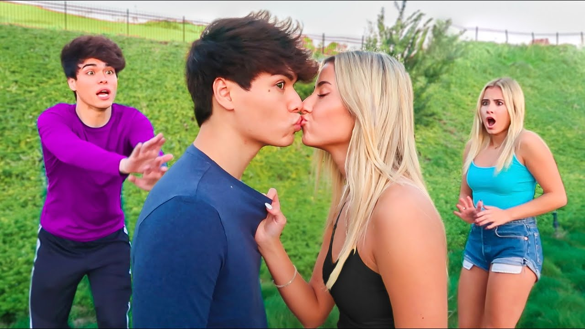
2020, 2.74x, 21.6M, 9 min
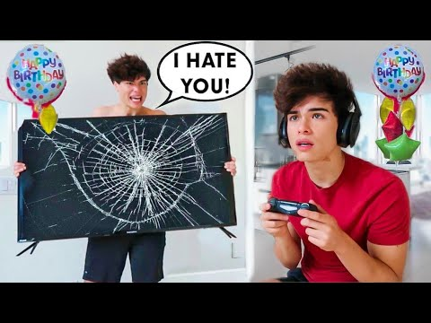
2020, 2.53x, 25.9M, 9 min
The winners since 2024
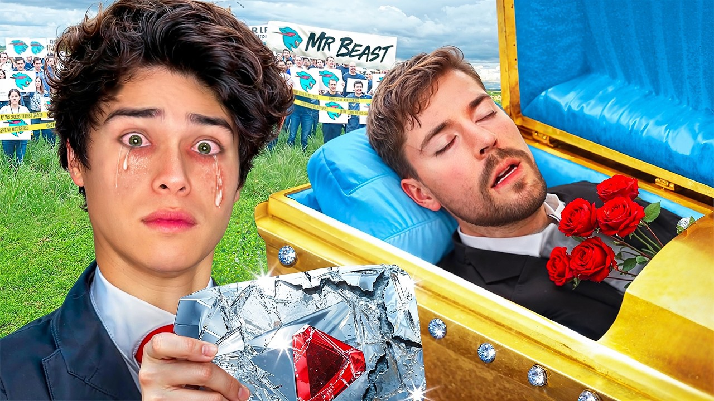
2024, 1.79x, 205.6M, 27 min
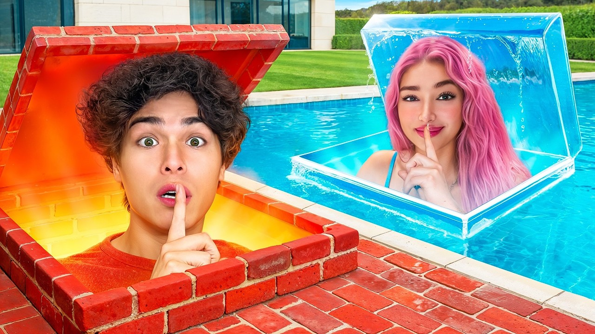
2025, 1.77x, 178.2M, 27 min
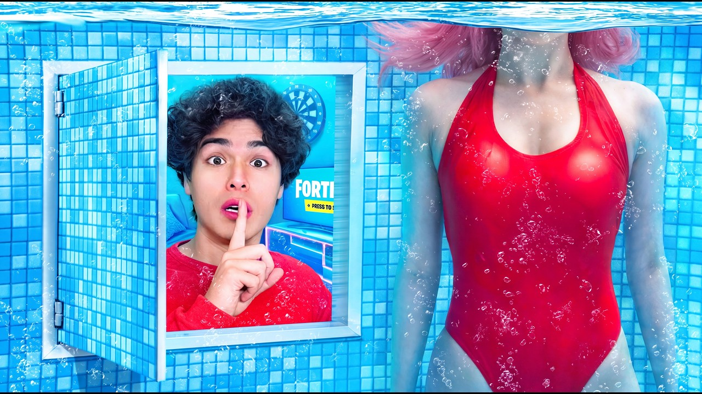
2024, 1.68x, 220.3M, 27 min2026, 1.52x, 50.4M, 26 min
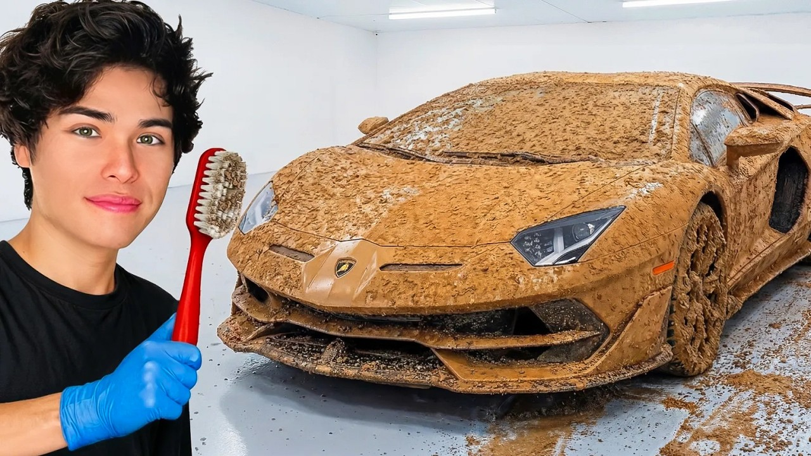
2026, 1.51x, 82.2M, 24 min
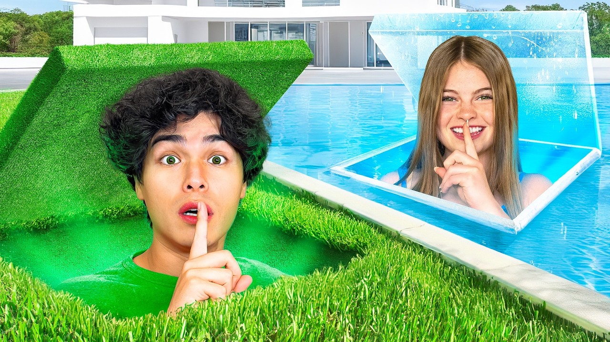
2024, 1.51x, 278.8M, 29 min2026, 1.39x, 60.8M, 27 min
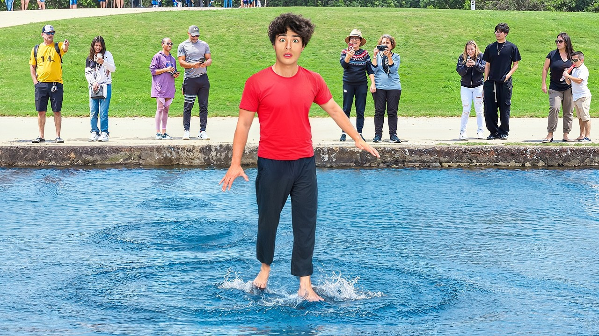
2025, 1.34x, 164.4M, 27 min
The weakest uploads since 2024
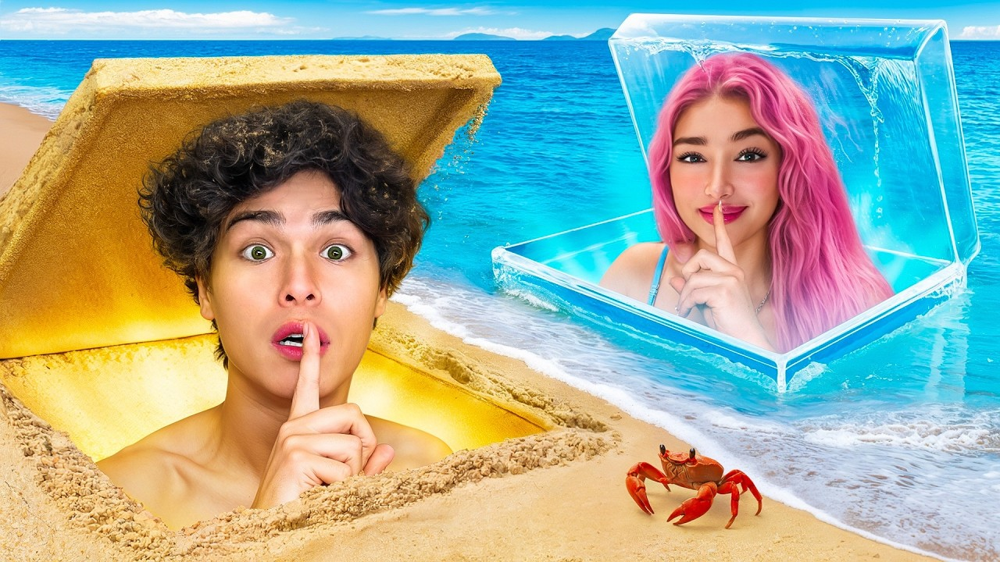
2024, 0.37x, 76.8M, 79 min2025, 0.45x, 31.1M, 132 min
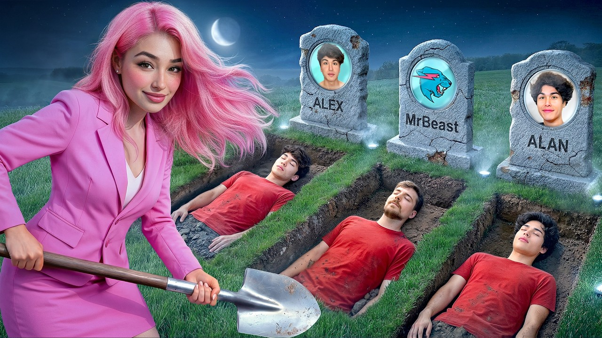
2025, 0.50x, 33.5M, 79 min
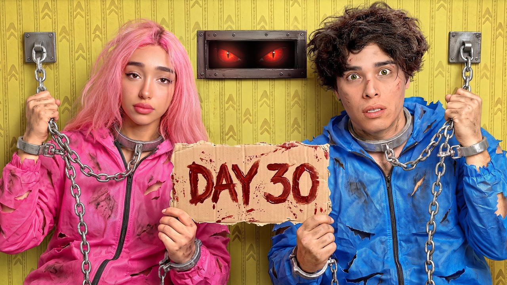
2026, 0.58x, 13.6M, 28 min
One pattern is checkable against the titles: every winning recent thumbnail can be named in a sentence without the title (a Lamborghini covered in lava; twins chained up holding a DAY 30 sign; a monster behind a boy in a yellow corridor), which is the mechanism test the knowledge base asks of a thumbnail. Of the four weakest recent uploads, 3 run past 78 minutes, so the thumbnail is unlikely to be what failed there.
Openings
Every video says the title in its first sentence
197 of the 200 uploads have a transcript, so the first minute of speech is stored for each. Since 2024 the words of the title are spoken by the 5th word on a median video, 78% of recent uploads say them inside the first ten words, and 7% never say them in the first minute. Delivery got faster: a recent first minute holds 178 words against 153 in 2020 and 2021. The premise is sentence one and the stakes are sentence two, without exception in the last two years:
Clean The Sports Car, Keep It! opens: If you can clean the Lamborghini, you can keep it. Today, we'll be competing to clean two cars completely covered in dirt
24 Hours In A Country Where It’s Illegal To Be Fat.. opens: You're fat. >> I don't think people here will be too nice to you. You're fat. People call South Korea, the country
I Exposed 100 Evil Kids! opens: These are the world's most evil twins. These twins bully people, take whatever they want, >> and treat the entire world like
I Tested 100 BANNED School Products! opens: You might not see it now, but I'm actually wearing a product that's banned from all schools because today we're testing banned
This matters for the intelligence system more than for the twins. Twenty-one claims in the knowledge base are about what the first thirty seconds must do, and they are measured by comparing videos that deliver the promise early against ones that do not. On this channel there is nothing to compare: every upload complies, so the within-channel probe has no variance and reports nothing. The claims can only be tested here against a retention curve, which public data does not carry. The knowledge base also holds a theory that the declarative today I'm doing X opening is a trend audiences are tiring of; the largest challenge channel in the store uses it on every upload, which is worth recording beside that theory even though it settles nothing.
Where the title's own words are first spoken, uploads since 2024Observed
Position in the word stream of the first minute; the stored opening has no per-word timings.
Engagement
Reach dilutes participation
Likes and comments are public, and both fell as the channel grew: a 2020 upload drew likes from 4.5% of its viewers, a 2025 upload from 0.68%; comments fell from 36 per ten thousand views to 1.8. That is what an audience broadening looks like, and it is consistent with the reported move to dubbed, international, younger viewers, though the record cannot say which of those it is.
Within one era the comment rate runs the wrong way: on the 33 uploads published between January 2024 and August 2025 (all at least a year old, so age is not the cause), a higher comment rate goes with a lower score (rank correlation -0.42), while the like rate barely moves (+0.17). The biggest videos have the thinnest comment rates. The likeliest reading is mechanical: the extra views on a breakout come from wider, more passive surfaces, and the denominator grows faster than the commenters. It is an observation about how the counts behave, not a lever, and it is a caution against reading a comment rate as a quality signal on a channel this size.
Likes per hundred views, median by yearObserved
Public like counts against lifetime views.
Comments per 10,000 views against score, uploads from Jan 2024 to Aug 2025Correlation
Age-matched window. The direction is negative; the cause is not identified.
Cadence
Twice a month, Fridays and Saturdays, and the day does not separate
The gap between uploads grew from 5 days in 2020 to 20 in 2025 and 13 so far in 2026, in step with the runtime. The gap before an upload does not predict its score (rank correlation +0.13 since 2024). Friday and Saturday carry 25 of the 56 recent uploads and sit at 0.96x and 0.84x; the weekdays that read higher hold three to seven uploads each, too few to call. The fleet's cadence claim (keep a stable rhythm) did not hold here, as it has not on most channels; its two decomposed children were rejected by the data this week.
Median days between uploads, by yearObservedMedian score by upload weekday, since 2024Observed
Ordered by count. Nothing under ten uploads should be read as a preference.
What the record says to test next
Five tests the catalogue itself proposes
Each is a next upload the data points at, with the figures behind it and the knowledge-base claims it would inform. The pictures are the channel's own thumbnails, shown as the reference composition for the shape; none is a proposed image. Tiers rate the evidence, not the idea.
Everything below rests on lifetime views and titles. Whether any of it clicked or held is unmeasured here, and the first Studio pull on this channel would re-rank it.
A borrowed name The thriller shape's two biggest entries carry someone else's name.
Thrillers: own name against borrowed nameObserved
Real frame
Real frame: the 2024 MrBeast thriller's own thumbnail, as the reference composition. Not a proposal for the picture. Every mock is a composite for direction, not a finished asset.
T1
MrBeast Went Missing..
A borrowed nameStrongest evidence
Why it should work
MrBeast Was Murdered.. is the strongest upload of the last three years at 1.79x and 205.6M views; the KPop entry that borrowed a film franchise reads 1.23x. The thrillers about the twins themselves went 1.15x, 1.13x and then 0.67x.
Keep it at the working length. The two strongest thrillers run 27 and 26 minutes; the weakest is the 79-minute one.
law · signed, not measured 0cf8b8fc71fetheory · not measured 8c5c0fa113bewarning · not measured ffe7ab00cbfe
Watch out
The knowledge base's single-winner law: the win may belong to the guest. A second borrowed-name entry is the test of whether the shape or MrBeast carried the first one. It also needs the guest.
Secret rooms at full size The shape holds when the runtime does.
Secret rooms by runtimeObserved
Real frame
Real frame: the 2025 one-colour secret-rooms thumbnail. Reference only. Every mock is a composite for direction, not a finished asset.
T2
I Built 6 Secret Rooms In ONE COLOR!
Secret rooms at full sizeStrongest evidence
Why it should work
The two one-colour entries are the shape's best: 1.77x (5 rooms, 26 min) and 1.51x (4 rooms, 29 min). Within the shape the three strongest are the three shortest full-size entries; the 78- and 131-minute entries read 0.37x and 0.45x.
Repetition is not what wears this shape here: the fleet's format-decay claim did not hold on this channel (repeat depth moved with views, +0.16).
rejected · held 20 of 61 on 15 ch, measured on this channel: did not hold, which favours repeating f12d6e116bf7candidate-law · held 43 of 68 on 19 ch 30b319487492candidate-law · held 103 of 104 on 19 ch be05cf1f696dwarning · not measured b77e1205fc9a
Watch out
Hold it under 30 minutes. The last attempt at a bigger version (67 rooms, 131 minutes) is the weakest upload of the last three years.
School as the stage The best upload of 2026 and three of the top ten since 2024.
Every school-set uploadObserved
Real frame
Real frame: the 2026 principal thumbnail. Reference only. Every mock is a composite for direction, not a finished asset.
T3
I Became A Teacher At The World's Strictest School!
School as the stageStrongest evidence
Why it should work
The school set is the channel's most reliable stage since 2024: 1.52x (principal, 26 min), 1.39x (100 banned products, 27 min), 1.24x (3 secret rooms in school, 33 min). Titles carrying school, kids or principal run 1.05x against 0.94x without since 2024.
The stage's one weak entry is the 58-minute 1,000-products version at 0.72x. Same rule as everywhere on this channel: the set works at 26 to 33 minutes.
law · signed, not measured 5f7da5d4578dwarning · not measured 14d43823c71b
Watch out
Four school uploads in eight months is a lot of the same room; interleave with other stages so the score keeps comparing against something else.
24 hours with a rare person Three uploads, all strong, all fifteen minutes, none since 2025.
24 hours with a rare personObserved
Real frame
Real frame: the 2024 shortest-woman thumbnail. Reference only. Every mock is a composite for direction, not a finished asset.
T4
I Spent 24 Hours With The World's Oldest Twins!
24 hours with a rare personGood evidence
Why it should work
All three rare-person entries are strong and short: 1.28x (shortest woman, 14 min), 1.21x (tallest man, 15 min), 0.94x (conjoined twins, 15 min). The shortest-woman entry has the highest like rate of any upload since 2024 (1.48%).
It is the channel's least-used strong shape: three uploads in two years and none since September 2025. A twin-themed subject ties it to the channel's own identity, which the knowledge base's familiar-plus-mysterious law favours.
law · signed, not measured 5f7da5d4578dcandidate-law · held 103 of 104 on 19 ch be05cf1f696d
Watch out
The subject has to be real and willing; the shape is about the person, so the package cannot be tested without one. Fifteen minutes is far below the channel's current working length, which is a production question, not a data one.
Do the task, keep the prize One 1.51x entry and one 0.83x entry: the sign of the task matters.
Task-for-a-prize uploads since 2024Observed
Real frame
Real frame: the February 2026 sports-car thumbnail. Reference only. Every mock is a composite for direction, not a finished asset.
T5
Clean The Lamborghini, Keep It! (Round 2)
Do the task, keep the prizeGood evidence
Why it should work
Clean The Sports Car, Keep It! is the best non-school upload of 2026 at 1.51x and 82.2M views in 24 minutes. Its mirror image, Destroy Your Car, Win a New Lamborghini!, read 0.83x three months later: the task the audience wants to watch is the satisfying one, not the destructive one.
The opening already states the deal in sentence one ("If you can clean the Lamborghini, you can keep it"), which is the promise-first opening every upload here uses.
law · signed, not measured 0cf8b8fc71fewarning · not measured 693b8db93f38
Watch out
One entry each way is a single winner and a single loser. The second clean-it entry is the test; do not read the pair as a rule yet.
Stop
Two shapes to retire
Last To Leave ___ Wins $___ has run 13 times since 2021 at a median 0.83x. Two entries cleared 1.5x (falling asleep in 2021, the capsule hotel in 2023); the last three read 1.68x, 0.57x and 0.58x, and the August 2026 backrooms entry is the weakest upload of the year. The shape has had five years and two eras to prove itself.
Fake-outs about the twins themselves. Our Last Video.. (0.73x), Stokes Twins Were Murdered.. (0.67x) and 3 YouTubers Were Murdered.. (0.50x) are three of the weaker recent uploads, and all three title a thing that did not happen to the channel. The knowledge base's warning that titles must state exactly what happened, and its warning that implausible claims depress clicks, are the two most-cited packaging rules in the store; both are theories, not measurements, and this is the kind of channel-level evidence they wait on.
Last To Leave, every entry in orderObserved
Limits
What this record cannot say
Clickability: no impressions and no click-through exist in public data, so nothing here says what a thumbnail or title did to the click. The thumbnail section describes; it does not measure.
Watchability: no retention curve, no average view duration. Runtime is the only proxy, and it is a proxy for what was made, not for what was watched.
Replayability: no returning-viewer split. The like and comment rates are the only audience-behaviour figures, and the engagement section shows why they are not quality signals at this size.
Views are lifetime. Every score compares an upload with its neighbours in time, which handles growth, but a 2026 upload is still accruing. First-28-day figures for new uploads will arrive from the view snapshots the store now takes.
Shorts and dubbing are invisible, and public reporting names them as the 2024 growth engine. This study is about the long-form catalogue only.
With Studio access (an Analyst invite for analytics@influint.co) every one of these gaps closes: the 200 curves, the per-video click-through, the viewer split, and the retention analysis that turns the openings section from a description into a measurement.
The store
What the crawl added to the intelligence
The channel is the first in the challenge-entertainment stratum and the first at the over-1m scale band with a catalogue this deep, so every observation it contributes opens a comparison the store could not make before. The re-test entered 16 observations on it (2 held), all on the lifetime basis and stamped with the new stratum: longer-videos-do-not-reduce-views held (+0.08); numbered titles (+0.09), all-caps words (-0.19), world-superlatives (+0.00) and the three cadence claims did not; the format-decay claim ran the other way (+0.16), which is the one to watch as more challenge channels enter.
Also stored: 197 spoken openings, 13 title shapes with 98 one-offs, the public like and comment counts for all 200 uploads, and a roster entry. The niche is confirmed from the catalogue, so the stratum is live for the next channel in it.
Method
How the figures were made
Catalogue: the channel's uploads playlist through the public Data API, long-form only (Shorts under three minutes excluded), 200 most recent. Score: lifetime views divided by the median of the nearest uploads in publish date, so 1.0x means typical for the channel at that time. Shapes: recurring n-grams and title signatures mined first, one model call to assign and name them, every figure computed from the assigned videos. Openings: public captions, first sixty seconds. Likes, comments and tags: the public statistics endpoint on 2026-09-02. Correlations are Spearman rank correlations; nothing under about 0.2 in size is read as a relationship, and nothing on a group under ten uploads is read at all.
Ideation: competitors
What a gaming channel could look like
Five gaming channels the twins' own tags already point at were seeded the same way this study was made: the 120 most recent long-form uploads each, lifetime views, runtimes, likes and comments, through public data only. Their windows differ because their cadences differ, and every figure below states its window. Three models of gaming channel are visible in them.
Model one: MrBeast Gaming, spectacle inside a game
59.6M subscribers. In 2020 and 2021 it shipped 28 and 37 uploads at 46.3M and 78.3M per upload, ten minutes long. It went almost quiet in 2023 and 2024 (3 and 1 uploads), then relaunched: 21 uploads in 2025 at 36.0M and 16 so far in 2026 at 46.5M, with the runtime nearly doubled to 18 and 22 minutes. 70% of its titles never name a game; the ones that do (Minecraft, Among Us) read 1.35x against 0.85x, so naming the game is no penalty, but the premise is what the title sells. Its eight strongest: If You Build a House, I'll Pay For It! (5.33x, 247.2M); I Survived 100 Days Of Hardcore Minecraft! (4.21x, 183.7M); Among Us With 100 Real Players! (4.08x, 130.7M); I Made 100 Players Escape An Impossible Maze! (3.72x, 156.6M); 1000 Zombies vs Mutant Enderman! (3.69x, 158.4M); World's Fastest Car! (3.65x, 121.2M); Survive 1000 Days, Win $100,000 (3.43x, 100.5M); $2 VS $16,000 Minecraft House! (3.26x, 116.8M). Money stakes are its most-used shape and its weakest: Last To Leave ___ Wins $___ is 32% of the catalogue at 0.86x, the same figure that shape reads on the Stokes channel (0.85x). In its bottom quartile the over-represented words are wins, hour and hardest; in its top quartile, 100 (8 of 30 winners against 2 of 30 losers). Runtime: 15 to 20 minutes reads 1.53x over 13 uploads, under 10 minutes 0.82x.
Model two: daily and game-first (PrestonPlayz, SSundee, Aphmau)
PrestonPlayz (17.8M subscribers) uploads every 5 days, 89% of titles name a game, 5.8M per upload in 2025 and 2.6M in 2026 so far; its winners are Minecraft mechanics (How Minecraft Mobs Act when you leave… (7.29x, 26.1M)) and its losers are myths and scary, two of the words that carry the Stokes channel. SSundee (25.4M subscribers, daily, 76% game-named) sits at 0.6M per upload; Aphmau (25.2M subscribers, daily, a character series rather than challenges) at 1.1M. Per upload, these channels earn between 0.02 and 0.24 views per subscriber against 0.86 on MrBeast Gaming and 0.38 on the Stokes channel: the daily game-first model buys volume and pays for it per video.
Model three: Unspeakable, the migration in the other direction
20.0M subscribers, once a Minecraft channel. In the last two years only 7% of its titles name a game and its strongest uploads are Stokes-shaped: I Turned My School Bus Into A FISH TANK! (6.67x, 16.6M); I Built 30 Secret Rooms You’d Never Find! (5.02x, 19.0M); I Turned My House Into a Waterpark! (4.22x, 20.4M); Sneaking Into A Trampoline Park Overnight! (3.99x, 9.9M). It uploads every 6 days at 4.4M per upload, its runtime has risen from 22 to 35 minutes across the window and longer reads better there (rank correlation +0.26). The audience that made a Minecraft channel is watching real-life secret rooms and cardboard prisons, which is the same audience the twins already tag their uploads for (MrBeast on 75 uploads, Preston on 54, Unspeakable on 51).
Median lifetime views per upload, ordered by cadence (slowest first)Observed
Windows differ and are stated in the text: MrBeast Gaming's 120 uploads span six years, Aphmau's and SSundee's span six months. Per-upload views fall as cadence rises across all six.
Median runtime per uploadObservedShare of titles that name a gameObserved
Game names matched: Minecraft, Roblox, Among Us, Fortnite and the like, plus Minecraft vocabulary (mobs, villagers, hardcore, 100 days).
MrBeast Gaming: median views per upload by yearObserved
Three uploads in 2023 and one in 2024; the channel relaunched in 2025 at nearly twice the runtime.
MrBeast Gaming: the eight strongest uploadsObserved
Highlighted: titles that never name a game.
MrBeast Gaming: median score by runtime bandObservedUnspeakable: the eight strongest uploadsObserved
Highlighted: titles that never name a game.
Ideation: the landscape beyond
The strategy note: the game is the vessel, not the subject
The case for a gaming channel is not a new audience. The twins' tags name MrBeast, Preston and Unspeakable on a third of their uploads, Unspeakable's audience followed him from Minecraft into secret rooms, and the twins' own catalogue holds exactly one game-named title (We Played AMONG US But IN REAL LIFE!! (Imposter IQ, 0.63x). The department workflow's abandonment test asks whether a new direction moves a held audience at a cost; here the audience is the same one, so the question is dilution, not abandonment. A second channel is the answer the largest example gives: MrBeast runs the spectacle-in-games line as its own channel, and the knowledge base's warning that a video which misrepresents the channel delivers subscribers who want something you do not make is the reason to keep the main channel's recommendation identity intact.
What the five catalogues say about how to make it broad enough that the game is the container and the content is what the audience already comes for:
Premise first, game optional. 70% of MrBeast Gaming's titles never name a game, and every one of its eight strongest reads to someone who has never played: a house that gets paid for, 100 real players, 100 days survived. Naming the game costs nothing (1.35x against 0.85x) as long as the premise carries the title.
Do not import the money stake.Last To Leave ___ Wins $___ is a third of MrBeast Gaming's catalogue at 0.86x and 11% of the Stokes catalogue at 0.85x; wins and hour are MrBeast Gaming's bottom-quartile words. Both channels have already measured this shape and it reads the same on each.
Import the count and the build.100 is MrBeast Gaming's top-quartile word (8 of 30 winners, 2 of 30 losers); builds are its strongest shape (1.17x). Counts already read 1.06x on the Stokes channel.
Fifteen to twenty minutes, not twenty-seven. MrBeast Gaming's 15-to-20-minute band reads 1.53x; its relaunch runs 18 to 22 minutes. The 27-minute working length of the main channel is a real-life-production figure, not a gaming one.
Cadence is the price of the per-upload figure. Across the six channels per-upload views fall as cadence rises, from 51.0M at every 13 days (MrBeast Gaming) to 0.6M daily (SSundee). MrBeast Gaming's relaunch runs about two uploads a month, which is the twins' own rhythm.
Cut the Shorts from the long-form. The knowledge base's Shorts warnings are about standalone Shorts converting into ghost subscribers; a gaming channel's Shorts should be extracted from its own uploads.
Five of the main channel's shapes, and the version of each that the competitor record already contains:
24 hours / 100 days survival becomes I Survived 100 Days Of Hardcore Minecraft: the shape is 20% of the Stokes catalogue at 1.19x; on MrBeast Gaming it is rare (4 uploads) and reads 2.80x.
secret / hidden / trap becomes I Built 5 Secret Rooms In Minecraft: 20% of the Stokes catalogue at 1.05x; Unspeakable's real-life version is its second-strongest upload (5.02x).
count in title (100, 1000) becomes Among Us With 100 Real Players: counts read 1.06x on the Stokes channel and 1.02x on MrBeast Gaming, where 100 is the top-quartile word.
build / made / craft becomes If You Build a House, I'll Pay For It: MrBeast Gaming's strongest upload and its strongest shape (1.17x over 16); on the Stokes channel builds read 0.96x.
last to leave / wins $ becomes Last To Leave Circle Wins $10,000: the one shape not to import: 0.86x on MrBeast Gaming across 32% of its catalogue, 0.85x on the Stokes channel, and wins is MrBeast Gaming's top bottom-quartile word.
Each is a mapping, not a measurement: the knowledge base's law that a single winner does not establish a format applies to every line above, and its rule that a format is only real if twenty episodes can be listed before launch is the test to run on paper first. What no public record can say is whether the twins' viewers click a Minecraft thumbnail from the twins; that is the first thing a gaming channel's Studio pull would answer.
Knowledge-base claims this note rests on: warning 6e81c9f8f955 (not signed, not measured), warning ffe7ab00cbfe (not signed, not measured), warning 97b1dea3adbf (not signed, not measured), warning b144e6b02394 (not signed, not measured), theory e80711721bda (not signed, not measured), law 0cf8b8fc71fe (signed, not measured), theory 8c5c0fa113be (not signed, not measured). Competitor catalogues seeded 2026-09-02 (MrBeast Gaming, PrestonPlayz, Unspeakable, Aphmau, SSundee); the five channels now sit in the store's gaming stratum with their own pages.
MrBeast Gaming: title shapes, median score and share of the catalogueObservedStokes Twins: title shapes, median score and share of the catalogueObserved